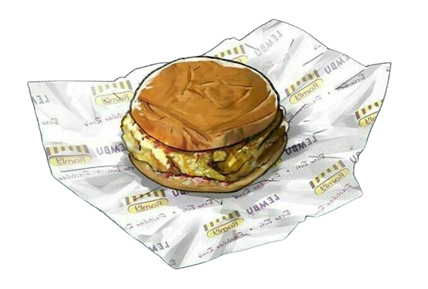
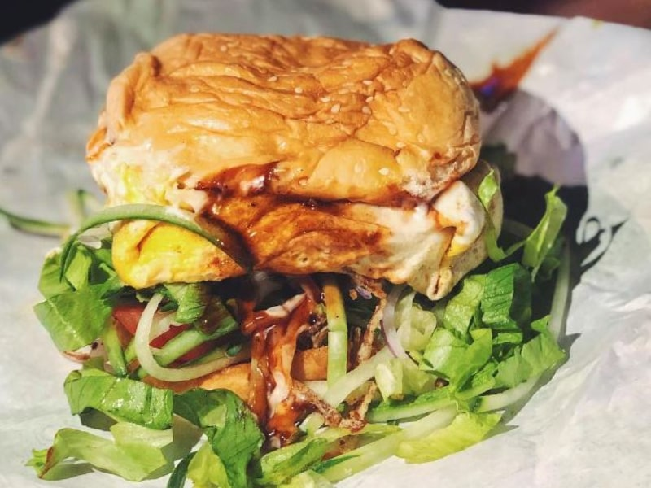
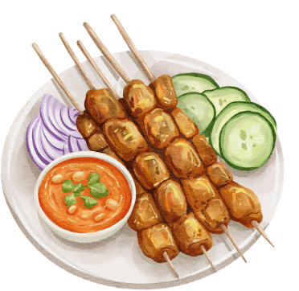
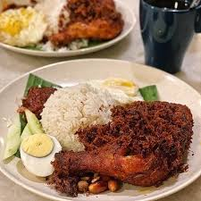

Ramly Burger

A famous Malaysian street burger made with juicy patties wrapped in egg, topped with sauces and fresh vegetables.
Cendol
A refreshing dessert of shaved ice, coconut milk, green pandan jelly, palm sugar syrup, and red beans.

Satay
Skewered and grilled meat served with peanut sauce, cucumber, and rice cakes.
Char Kway Teow

Stir-fried flat rice noodles with prawns, cockles, eggs, bean sprouts, and Chinese sausage, cooked over high heat.
Nasi Lemak

Malaysia’s national dish — fragrant coconut rice served with sambal, fried anchovies, peanuts, boiled egg, and cucumber.